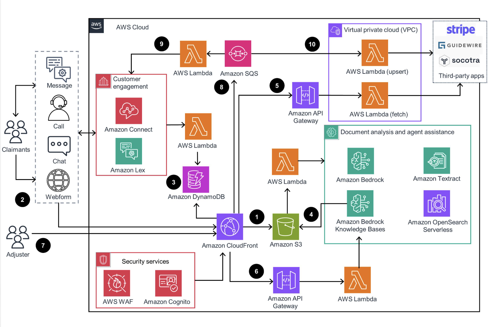

A automação sempre acompanhou a tecnologia
Quando falamos em automação, é comum pensar em scripts, robôs que clicam em telas ou, mais recentemente, agentes que conversam com sistemas. Mas a história é bem mais longa. Em 1890, a tabuladora de cartões perfurados de Herman Hollerith foi utilizada no censo dos Estados Unidos e reduziu significativamente o tempo de processamento de dados. A ideia central já estava presente: transformar uma atividade manual, repetitiva e intensiva em informação em um processo executado por máquinas.
Nas décadas seguintes, computadores comerciais, linguagens como COBOL, sistemas de planejamento de materiais (MRP), ERP e planilhas eletrônicas ampliaram o alcance da automação dentro das empresas. O foco saiu do cálculo isolado e passou para o processamento de transações, integração de áreas e gestão de operações.
Um marco conceitual importante veio com a reengenharia de processos, nos anos 1990: em vez de simplesmente automatizar uma tarefa existente, a tecnologia deveria ajudar a redesenhar o próprio processo. Essa distinção continua atual. Automatizar uma etapa ineficiente pode apenas acelerar o desperdício; modernizar exige entender o fluxo de ponta a ponta.
A pergunta deixou de ser “qual tarefa podemos automatizar?” e passou a ser “como o processo deveria funcionar se pudéssemos redesenhá-lo hoje?”.
Com a popularização de plataformas de workflow e RPA, tornou-se possível conectar sistemas e reproduzir interações humanas em interfaces. Agora, a IA generativa e os agentes adicionam uma nova capacidade: interpretar linguagem natural, documentos variáveis e situações que não cabem facilmente em regras previamente definidas.
Regras, workflows, RPA e agentes resolvem problemas diferentes
Essas tecnologias não são versões sucessivas de uma mesma ferramenta. Cada uma representa um mecanismo de execução e decisão com características próprias. A escolha depende da previsibilidade da tarefa, da estrutura dos dados, da criticidade da decisão e da necessidade de auditoria.
| Abordagem | Onde funciona melhor | Limite típico |
|---|---|---|
| Regras de negócio | Elegibilidade, limites, cálculos, validações, alçadas e políticas estáveis. | Não interpretam bem entradas ambíguas ou contextos não previstos. |
| Workflows | Orquestrar etapas, estados, eventos, prazos, retries, exceções e aprovações. | Precisam que as decisões e transições sejam modeladas; não interpretam, por si só, conteúdo ambíguo. |
| RPA | Operar interfaces gráficas quando não há API adequada ou integração suportada. | É sensível a mudanças de tela, seletores, sessão, credenciais e ambiente de execução. |
| IA agêntica | Interpretar documentos, lidar com linguagem natural, classificar exceções e planejar etapas delimitadas. | É probabilística; exige avaliação, limites de autonomia, observabilidade e controles contra respostas incorretas. |
Uma regra é determinística: dada a mesma entrada e a mesma versão da regra, esperamos a mesma saída. Um workflow controla a sequência e o estado do processo. Um robô RPA reproduz ações em uma interface. Já um agente pode interpretar uma situação e selecionar ferramentas para cumprir uma tarefa, mas seu comportamento não deve ser tratado como uma regra de negócio confiável.
Por isso, em processos financeiros, regulados ou de alto impacto, a IA deve apoiar a interpretação e a recomendação sem assumir automaticamente a autoridade de aprovar, pagar, alterar cadastro ou negar um direito. A decisão final precisa respeitar políticas explícitas, alçadas e pontos de aprovação definidos pelo negócio.
O que muda quando a automação vai para cloud
A migração para cloud não torna a automação tradicional obsoleta. Ela muda como seus componentes são provisionados, integrados, escalados e observados. Regras continuam necessárias; workflows passam a coordenar serviços distribuídos; e robôs podem executar em ambientes hospedados ou elásticos.
Regras: mais desacopladas e versionáveis
Políticas de elegibilidade, limites, cálculos e validações continuam fazendo sentido como componentes explícitos. Separar decisão da execução facilita versionamento, testes, rastreabilidade e revisão. Tabelas de decisão e abordagens como DMN ajudam a representar regras sem espalhá-las por todo o código do processo.
Workflows: orquestração distribuída e orientada a eventos
Serviços como AWS Step Functions, Google Cloud Workflows e Azure Logic Apps permitem coordenar APIs, serviços cloud e sistemas híbridos. Eles podem controlar estado, timeout, tentativas, tratamento de falhas e integração por eventos. O workflow torna explícito o caminho de execução e permite que diferentes componentes participem do mesmo processo.
Cloud, porém, não significa ausência de falhas. Eventos podem ser entregues mais de uma vez; retries podem repetir efeitos colaterais; e transações distribuídas exigem estratégias de idempotência, compensação e reprocessamento. Resiliência precisa ser projetada, não presumida.
RPA: a infraestrutura muda, a interface continua existindo
Plataformas como Power Automate e UiPath oferecem opções de execução de robôs em máquinas hospedadas, VMs gerenciadas ou modelos elásticos. Isso facilita provisionamento e escala, mas não transforma uma automação de interface em integração nativa por API. O robô continua dependente da tela, da sessão, das permissões e da estabilidade da aplicação.
Uma diretriz arquitetural útil é priorizar APIs quando houver integração estável e suportada. RPA permanece valioso como ponte para sistemas legados sem API adequada — com controles explícitos de rede, identidade, credenciais e continuidade.
Arquiteturas híbridas: cada componente no lugar certo
O desenho mais consistente não coloca agentes no centro de tudo. Ele preserva a previsibilidade onde ela é necessária e usa IA nas etapas em que interpretação variável agrega valor.
decisão
Regras explícitas e testáveis avaliam políticas, limites, elegibilidade e alçadas.
orquestração
Workflows controlam estado, sequência, eventos, timeout, retry e aprovação.
execução
APIs são preferidas; RPA cobre interfaces inevitáveis e sistemas legados.
interpretação
IA generativa ou agentes tratam documentos, texto livre e exceções ambíguas.
O princípio é separar capacidade de sugerir de capacidade de executar. Um modelo pode extrair informações, classificar um documento ou recomendar um encaminhamento. Antes de qualquer ação, uma camada determinística valida identidade, autorização, dados, limites e necessidade de aprovação humana.
Essa separação também melhora a governança. É possível registrar qual documento foi analisado, qual versão do modelo foi utilizada, quais fontes foram recuperadas, que ferramentas foram chamadas, qual regra foi aplicada e quem aprovou a ação final.
Um exemplo: workflow híbrido de sinistro com AWS
Imagine a abertura de um sinistro de seguro. O processo recebe documentos, valida informações, consulta sistemas internos, identifica pendências e encaminha o caso para análise. Parte das etapas é previsível; outra parte depende de interpretar laudos, formulários e documentos com formatos diferentes.

Uma composição possível usa Amazon S3 para armazenar documentos; Amazon Textract para apoiar a extração de conteúdo; AWS Step Functions para orquestrar o ciclo; AWS Lambda e DynamoDB para validações e estado de negócio; EventBridge, SQS e SNS para eventos e comunicação; e CloudWatch para observabilidade. Em etapas específicas, um robô pode operar um sistema legado sem API, enquanto Amazon Bedrock pode apoiar a interpretação de documentos ou a classificação de casos complexos.
O agente não precisa — e em muitos cenários não deve — ter permissão para aprovar cobertura ou efetuar pagamentos. Ele pode produzir uma recomendação estruturada, acompanhada de evidências e grau de confiança. Regras de negócio e alçadas continuam controlando a decisão, com revisão humana nos casos sensíveis.
O valor do modelo híbrido está em combinar escala e flexibilidade sem perder rastreabilidade. O workflow controla o processo; as regras mantêm decisões críticas explícitas; o RPA cobre a lacuna de integração; e a IA amplia a capacidade de lidar com dados não estruturados.
Como escolher a abordagem
Antes de escolher a tecnologia, vale responder a quatro perguntas:
- A regra é conhecida e estável? Se sim, prefira uma regra explícita, testável e versionável.
- O desafio é coordenar etapas e sistemas? Use um workflow para controlar estado, eventos, falhas e aprovações.
- Existe API adequada? Prefira integração direta; considere RPA quando a interface for a única opção viável.
- A entrada exige interpretação variável? Considere IA, mas limite ferramentas e permissões, avalie resultados e mantenha aprovação humana para ações de alto impacto.
Também é necessário avaliar custo e risco. Agentes podem consumir mais recursos do que fluxos determinísticos, especialmente quando há múltiplas chamadas de modelo ou ferramentas. O ganho precisa justificar custo por execução, latência, observabilidade, manutenção e esforço de governança.
O futuro é composição, não substituição
A história da automação corporativa é uma história de abstração crescente: de máquinas que processam cartões a sistemas integrados, de scripts a workflows distribuídos, de robôs de interface a agentes capazes de interpretar contexto. Cada avanço amplia o repertório, mas não elimina a necessidade das camadas anteriores.
O futuro mais plausível é uma arquitetura composta. Regras definem o que é permitido; workflows coordenam quando e em que ordem executar; APIs integram sistemas; RPA cobre interfaces legadas; e IA apoia interpretação e tratamento de exceções.
O desafio de arquitetura não é adotar a tecnologia mais nova em todas as etapas. É entender onde cada mecanismo agrega valor, onde introduz risco e como manter o processo observável, auditável e sustentável.
Clareza na decisão. Escala na execução. Eficiência no processo.
Esse é o tipo de evolução que me interessa acompanhar: não a automação como substituição indiscriminada de pessoas ou ferramentas, mas como engenharia de processos melhores — com tecnologia aplicada ao problema certo.
Referências e leituras
Este artigo sintetiza a pesquisa “Linha do tempo da automação corporativa”, com marcos históricos, comparação entre automação tradicional e IA agêntica, e análise de regras, workflows e RPA em ambientes cloud. As referências abaixo são as documentações e materiais técnicos citados na pesquisa de origem.
- History of Information — tabuladora de Hollerith e história do processamento de informação.
- COBOL — contexto histórico da linguagem de negócios.
- IBM History — evolução dos sistemas computacionais empresariais.
- Camunda — DMN — modelagem de decisões e tabelas de regras.
- AWS Step Functions — orquestração de workflows e tratamento de falhas.
- AWS Step Functions + EventBridge — integração orientada a eventos.
- Google Cloud Workflows — orquestração serverless de serviços e APIs.
- Microsoft Azure Logic Apps — workflows cloud e híbridos.
- Microsoft Power Automate — Hosted machines — execução de desktop flows em máquinas hospedadas.
- UiPath Cloud Robots — modelos de execução cloud para RPA.
- Anthropic Engineering — práticas de arquitetura e construção de agentes.
- OWASP Top 10 for LLM Applications — riscos de segurança em aplicações com LLMs.
Nota metodológica: o diagrama AWS é uma arquitetura conceitual para ilustrar a composição dos componentes. A escolha de serviços, controles de segurança, regiões, retenção, integrações e pontos de aprovação deve ser validada para cada contexto. Capacidades documentadas por fornecedores não significam adoção universal nem garantem resultados.